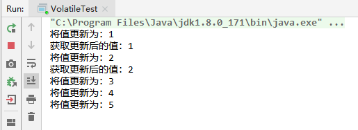
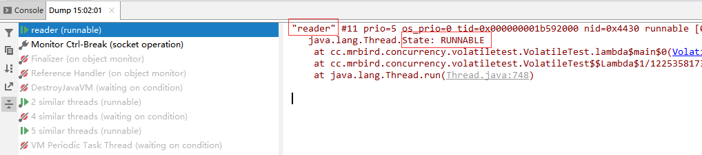
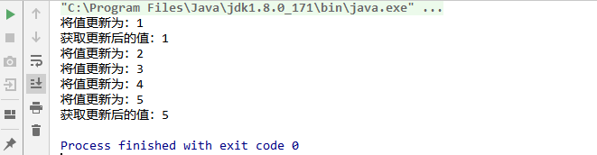
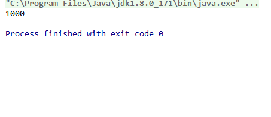

volatile关键字修饰的成员变量具有两大特性：保证了该成员变量在不同线程之间的可见性；禁止对该成员变量进行重排序，也就保证了其有序性。但是volatile修饰的成员变量并不具有原子性，在并发下对它的修改是线程不安全的。下面分别举例来演示这两个特性，并且分析为什么volatile不是线程安全的。
可见性
通过对JMM的学习，我们都知道线程对主内存中共享变量的修改首先会从主内存获取值的拷贝，然后保存到线程的工作内存中。接着在工作内存中对值进行修改，最终刷回主内存。由于不同线程拥有各自的工作内存，所以它们对某个共享变量值的修改在没有刷回主内存的时候只对自己可见。
举个例子，假如有两个线程，其中一个线程用于修改共享变量value，另一个线程用于获取修改后的value：
1 | public class VolatileTest { |
writer线程每隔0.5秒将INIT_VALUE值递增，直到INIT_VALUE大于等于5。而reader线程则是不停的去获取INIT_VALUE的值，直到INIT_VALUE的值大于等于5。程序执行结果如下：


多执行几次可能每次结果都不一样，但是可以确定的是，writer对值的修改reader并不能马上感知到（如果能感知到的话，reader线程就不会停不下来了）。
为什么会出现上面的结果呢？因为writer线程在工作内存中修改了INIT_VALUE的值，即使它刷回主内存了，但是reader线程在此之前已经从主内存获取了INIT_VALUE的值（因为线程获取CPU时间片不确定性，这个值可能是0，也可能是被writer修改后的值，但writer线程是每隔0.5秒才会去修改值，所以reader获取到的INIT_VALUE的值一般不会是writer修改的最终值5），并保存到了reader线程的工作内存中。reader线程通过while不断的轮询判断value和INIT_VALUE的值是否相等，但是由于reader线程工作内存中已经有INIT_VALUE的值的拷贝了，所以reader并不会重新从主内存中获取被writer修改后的INIT_VALUE的值，reader线程里while条件一直成立，这就是为什么reader线程不会正常停止并且没有输出修改后的值的原因。
修改上面的例子，将INIT_VALUE成员变量使用volatile关键字修饰：
1 | public class VolatileTest { |

可以看到，reader线程已经可以正常停止了，因为最终INIT_VALUE的值肯定是5，并且reader可以感知到这个值被修改为5了。
为什么volatile修饰的成员变量在线程间具有可见性呢？因为通过volatile修饰，对此变量进行写操作时，汇编指令中会有一个LOCK前缀指令，加了这个指令后，会引发两件事情：
将当前处理器缓存行的内容写回到系统内存，也就是强制将工作内存中的值刷回主内存；
这个写回到内存的操作会使得在其他CPU里缓存了该内存地址的数据失效。其他CPU缓存数据失效，则会重新去内存中读取值，也就是被修改的数据。
通过上面这两个特性，我们可以确定的是，writer对值进行修改并刷回主内存后，reader里INIT_VALUE值的拷贝就失效了，所以reader线程会再次从主内存中获取INIT_VALUE的值，这时候这个值已经是被writer线程修改刷新后的值了。
有序性
来看一个线程不安全的单例实现（双重同步锁单例模式，更多关于单例的介绍可以参考单例的几种写法和对比）:
1 | public class SingletonTest { |
上面的例子虽然加了同步锁，但是在多线程下并不是线程安全的。第12行instance = new SingletonTest()在实际执行的时候会被拆分为以下三个步骤:
分配存储SingletonTest对象的内存空间；
初始化SingletonTest对象；
将instance指向刚刚分配的内存空间。
通过JMM的学习我们都知道，在执行程序时，为了提高性能，编译器和处理器常常会对指令做重排序，因为第2步和第3步并没有依赖关系，所以可能发生重排序，排序后的步骤为：
分配存储SingletonTest对象的内存空间；
将instance指向刚刚分配的内存空间；
初始化SingletonTest对象。
经过重排序后，上面的例子在多线程下就会出现问题。假如现在有两个线程A和B同时调用SingletonTest#getInstance，线程A执行到了代码的第12行instance = new SingletonTest()，已经完成了对象内存空间的分配并将instance指向了该内存空间，线程B执行到了第9行，发现instance并不是null（因为已经指向了内存空间），所以就直接返回instance了。但是线程A并还没有执行初始化SingletonTest操作，所以实际线程B拿到的SingletonTest实例是空的，那么线程B后续对SingletonTest操控将抛出空指针异常。
要让上面的例子是线程安全的，只需要用volatile修饰单例对象即可：
1 | public class SingletonTest { |
因为通过volatile修饰的成员变量会添加内存屏障来阻止JVM进行指令重排优化。
线程不安全
举个递增的例子：
1 | public class VolatileTest2 { |
多次运行上面的例子：

可以看到最终的值有可能小于1000。
volatile可以保证修改的值能够马上更新到主内存，其他线程也会捕捉到被修改后的值，那么为什么不能保证原子性呢？
因为在Java中，只有对基本类型的赋值和修改才是原子性的，而对共享变量的修改并不是原子性的。通过JMM内存交互协议我们可以知道，一个线程修改共享变量的值需要经过下面这些步骤：
线程从主内存中读取（read）共享变量的值，然后载入（load）到线程的工作内存中的变量；
使用（use）工作内存变量的值，执行加减操作，然后将修改后的值赋值（assign）给工作内存中的变量；
将工作内存中修改后的变量的值存储（store）到主内存中，并执行写入（write）操作。
所以上面的例子中，可能出现下面这种情况：
thread1和thread2同时获取了value的值，比如为100。thread1执行了+1操作，然后写回主内存，这个时候thread2刚好执行完use操作（+1），准备执行assign（将+1后的值写回工作内存对应的变量中）操作。虽然这时候thread2工作内存中value值的拷贝无效了（因为volatile的特性），但是thread2已经执行完+1操作了，它并不需要再从主内存中获取value的值，所以thread2可以顺利地将+1后的值赋值给工作内存中的变量，然后刷回主存。这就是为什么上面的累加结果可能会小于1000的原因。
要让上面的例子是线程安全的话可以加同步锁，或者使用atomic类，后续会介绍到。